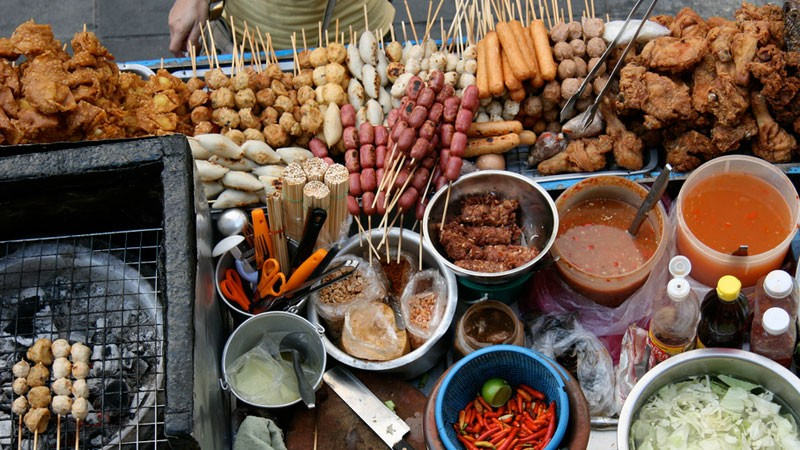

About us

Street food is something with which we meet every day, walking along the street of the city. We used to buy snacks in places because it is fast and tasty. Our site was created in order to see and appreciate what people eat in fast-foods facilities in different cities and countries. You can easily evaluate food, read a brief description of the dish, compare and share yours impressions of it.